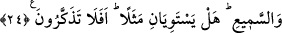

HİÇ EŞİT OLURLAR MI?
18. Allah’a yalan uydurandan daha zâlim kim olabilir? Onlar Rab’lerine
sunulacaklar, şâhitler de: “İşte Rab’lerine karşı yalan söyleyenler bunlardır. İyi
bilin ki Allah’ın lâneti zâlimlerin üzerinedir.” diyecekler.
19. Onlar ki Allah’ın yoluna engel olurlar ve onu eğriltmek isterler ve onlar
âhireti de inkâr ederler.
20. Onlar yeryüzünde (Allah’ı) âciz bırakacak değillerdir ve onların Allah’tan
başka (yardım isteyecekleri) dostları da yoktur. Onlar için azap kat kat yapılır.
Çünkü
onlar
(gerçekleri)
işitmeye
tahammül
edemiyor
ve
(hakikati)
göremiyorlardı.
21. İşte onlar kendilerini ziyana sokan kimselerdir. Uydurmakta oldukları şeyler
de kendilerinden kaybolup gitti.
22. Şüphesiz onlar âhirette en çok ziyâna uğrayanlardır.
23. Îman edip iyi işler yapan ve Rab’lerine gönülden boyun eğenlere gelince, işte
onlar cennet ehlidir. Onlar orada sürekli kalacaklardır.
24. Bu iki zümrenin durumu, kör ve sağır ile gören ve işiten gibidir. Bunlar hiç eşit
olur mu?! Hâlâ ibret almıyor musunuz?
Melekler hakkında “Allah’ın kızlarıdır”, tanrıları hakkında: “Bunlar Allah katında
bizim şefâatçilerimizdir.” gibi sözler söyleyerek: “Allah’a” yakışmayan bir takım